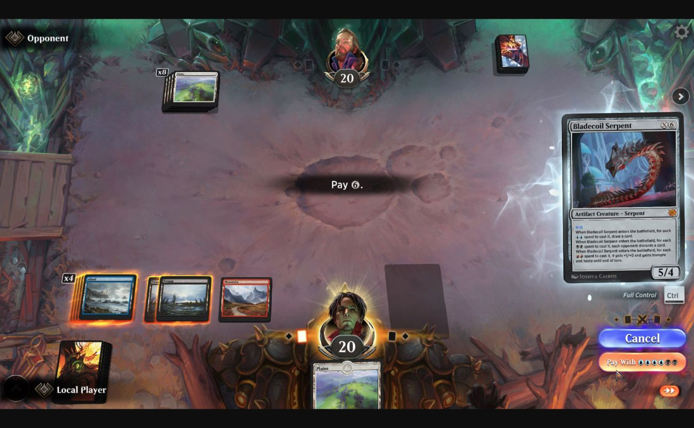
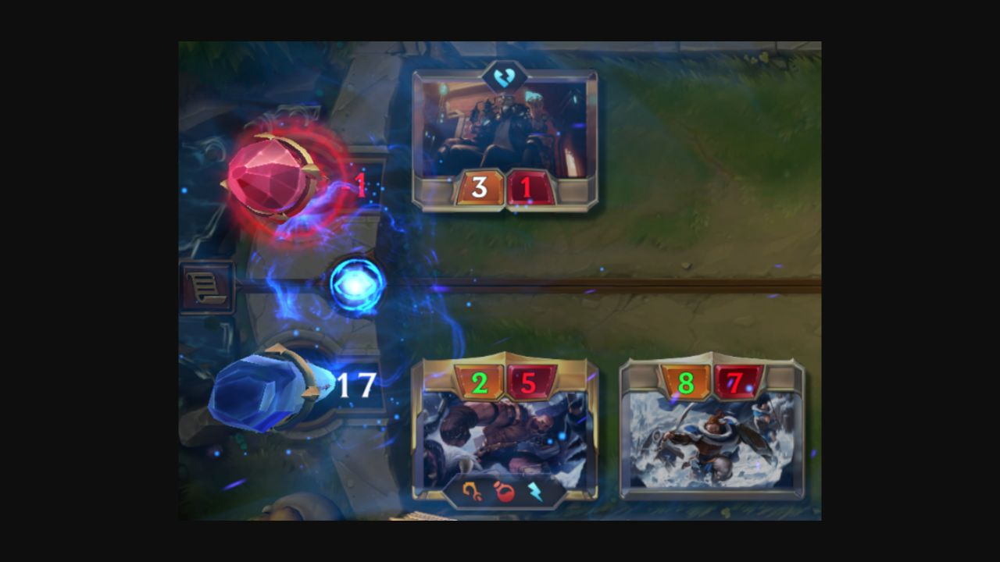
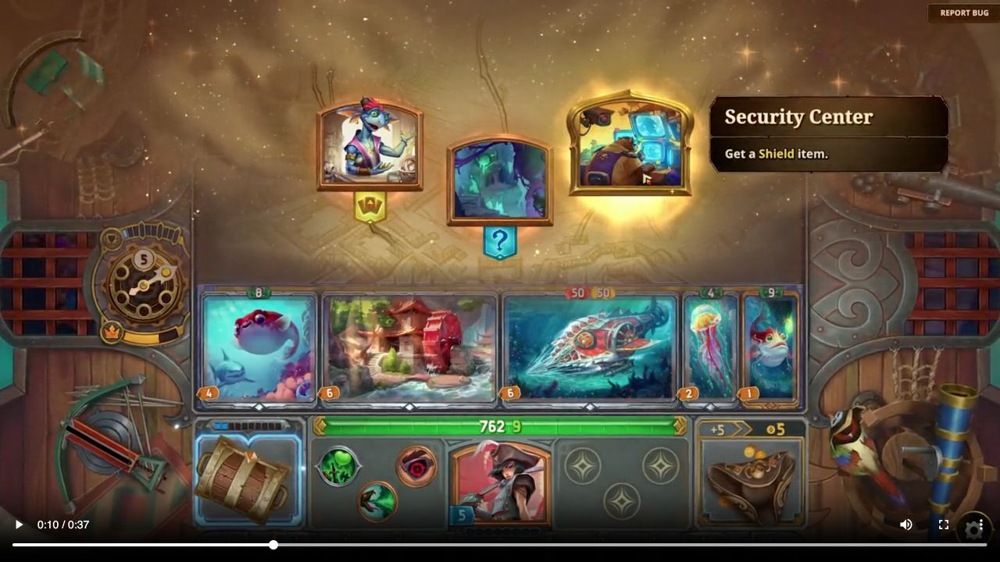
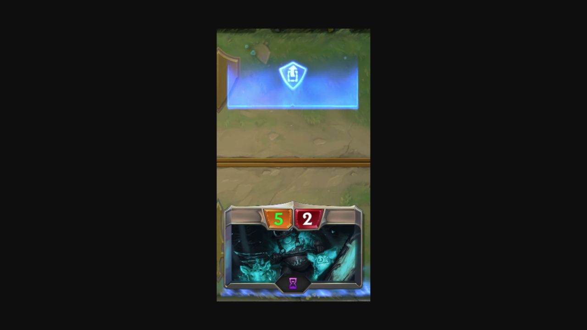
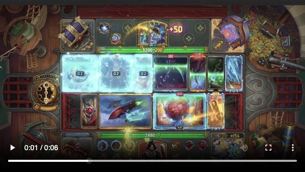
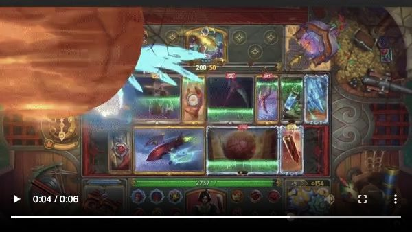
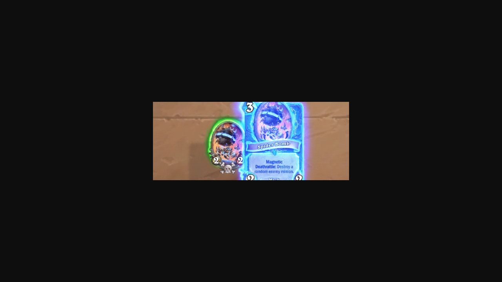
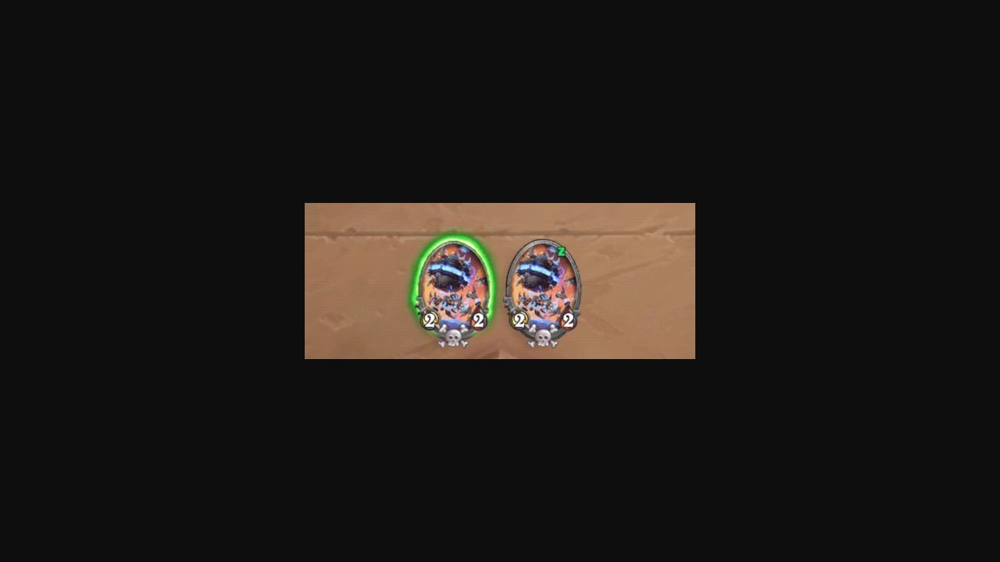
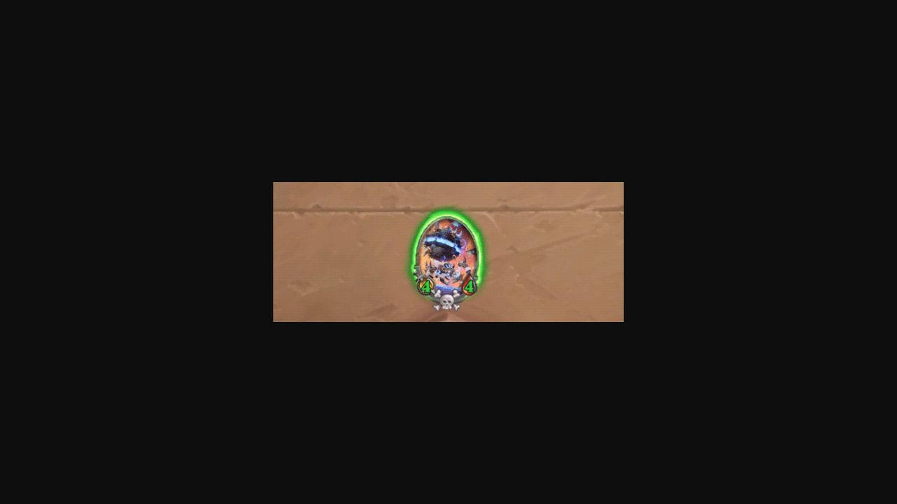

Review captures, not product assets. Positions are visual observations; recommendations are in the reference study.

123
12
123
123Official Round FAQ, July 30, 2022. Captured October 10, 2026. Still image; no current-build or timing claim.

123Official Steam listing, inspected October 10, 2026. Direct video playback timestamp 1.651079 seconds. Published clip has no build label. Playback controls are capture UI, not game UI.

12Direct playback timestamp 4.327338 seconds. This frame does not prove total effect duration, input blocking or audio timing. Read source limits and proposed use.
Frames sampled from the publisher's looping GIF. These are distinct illustrated states, not timed frames of one input sequence. No audio or current-client claim. Developer source.

12
12
12